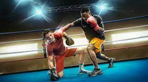
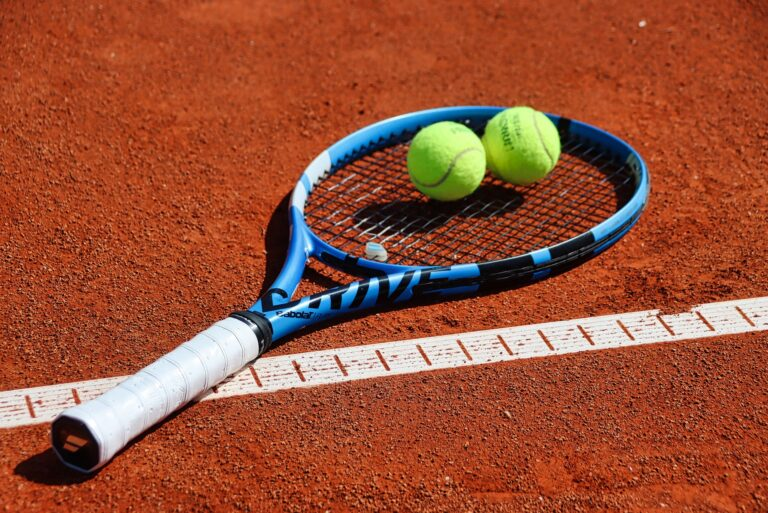

Le football est le premier sport que j'ai fait durant ma vie,Je jouais beaucoup avec les amis mais je l'ai jamais pratiqué d'une facon professionnel.

Les arts martiaux en générale m'interessent depuis les dernieres années. J'ai fait la boxe pendant 7 mois
et cela m'a interessé beaucoup puisque tu apprends des techniques qui te servent
pour la self-defense ainsi qu'elle permet d'etre de plus en plus discipliné

J'ai pratiqué le tennis en niveau amateur pendant 3 ans, et je le vois comme étant un sport competitif et qui necessite un souffle important pour survivre tout le match.